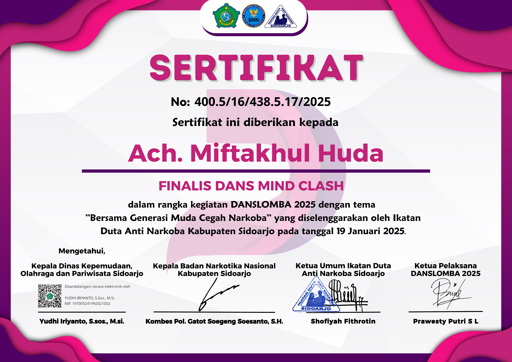

Berikut adalah beberapa sertifikat yang telah saya peroleh dari course, perlombaan, dan berbagai pencapaian lainnya.

Belajar Dasar Pemrograman Web
Sertifikat ini diberikan setelah menyelesaikan kursus Belajar Dasar Pemrograman Web di Dicoding. Materi mencakup HTML, CSS, dan JavaScript, yang menjadi fondasi utama dalam pengembangan website modern.

Belajar Dasar Pemrograman JavaScript
Sertifikat ini diperoleh setelah menyelesaikan kursus Belajar Dasar Pemrograman JavaScript di Dicoding. Kursus ini membahas konsep fundamental JavaScript, termasuk tipe data, function, loop, serta manipulasi DOM.

Belajar Dasar AI
Kursus Belajar Dasar AI dari Dicoding ini memperkenalkan konsep kecerdasan buatan (Artificial Intelligence) serta penerapan machine learning. Peserta memahami cara kerja AI dan model dasar yang digunakan dalam industri.

Belajar Membuat Front-End Web untuk Pemula
Kursus ini memberikan pemahaman mendalam tentang pengembangan tampilan website menggunakan HTML, CSS, dan JavaScript. Sertifikat ini diperoleh setelah menyelesaikan berbagai tantangan dalam membangun UI/UX yang responsif dan interaktif.

Cloud Practitioner Essentials (AWS Cloud)
Sertifikat ini menandakan pemahaman dasar tentang cloud computing melalui kursus Cloud Practitioner Essentials (AWS Cloud). Materi mencakup layanan AWS, arsitektur cloud, serta praktik terbaik dalam mengelola infrastruktur berbasis cloud.

Belajar Back-End Pemula dengan JavaScript
Kursus ini membahas konsep dasar pengembangan back-end menggunakan Node.js dan Express.js. Sertifikat ini menunjukkan kemampuan dalam membangun server, mengelola routing, serta memahami RESTful API.

Finalis DANS Mind Clash 2025
Sertifikat ini diberikan sebagai penghargaan atas pencapaian luar biasa sebagai finalis dalam kompetisi DANS Mind Clash 2025 - Cerdas Cermat Anti Narkoba. Kompetisi ini menguji pemahaman mendalam tentang bahaya narkoba, strategi pencegahan, serta dampaknya terhadap individu dan masyarakat. Keberhasilan mencapai babak final mencerminkan wawasan luas, kecerdasan analitis, dan komitmen dalam mendukung gerakan anti-narkoba.

Cyber Security
Sertifikat ini menandakan keberhasilan dalam menyelesaikan kursus Cyber Security di NetAcad Cisco. Kursus ini membahas dasar-dasar keamanan siber, termasuk ancaman digital, serangan siber, serta strategi perlindungan data dan sistem. Dengan sertifikat ini, menunjukkan pemahaman mendalam tentang prinsip keamanan informasi dan pengelolaan risiko keamanan dalam lingkungan digital.

Networking Basics
Sertifikat ini menandakan keberhasilan dalam menyelesaikan kursus Networking Basics di NetAcad Cisco. Kursus ini mencakup konsep dasar jaringan komputer, termasuk model OSI, alamat IP, serta konfigurasi jaringan dasar. Dengan sertifikat ini, menunjukkan pemahaman tentang cara kerja jaringan dan bagaimana menghubungkan perangkat secara efektif.

Networking Devices and Basic Configuration
Sertifikat ini menunjukkan penguasaan dalam memahami berbagai perangkat jaringan, seperti router dan switch, serta bagaimana melakukan konfigurasi dasar untuk mendukung komunikasi data yang efisien. Kursus ini memberikan pemahaman mendalam tentang cara kerja perangkat jaringan dan teknik konfigurasi awal menggunakan perintah dasar untuk memastikan jaringan berjalan dengan optimal.

Ethical Hacker
Sertifikat ini menandakan keberhasilan dalam menyelesaikan kursus Ethical Hacking di NetAcad Cisco. Kursus ini membahas teknik penetrasi keamanan jaringan, pengujian kerentanan, serta etika dalam hacking. Dengan sertifikat ini, menunjukkan keterampilan dalam mengidentifikasi dan mengatasi celah keamanan untuk melindungi sistem dari ancaman siber.

Webinar Emotional Intelligence
Sertifikat ini diberikan sebagai bentuk penghargaan atas partisipasi dalam Webinar Emotional Intelligence. Webinar ini membahas konsep kecerdasan emosional serta penerapannya dalam pengelolaan tim dan pengambilan keputusan. Dengan sertifikat ini, menunjukkan pemahaman mendalam tentang bagaimana mengelola emosi dengan efektif untuk meningkatkan produktivitas dan interaksi sosial.


.avif)